Betriebswirtschaftslehre#
Zusammenfassung für das Wintersemester 2021 bei Prof. Dr. Julia Müller-Seeger
Übersicht#
Allgemein#
Wirtschaften: Disponieren über knappe Güter als Gegenstand von Marktprozessen
Prinzipien profitorientierter Unternehmen:
Maximumprinzip: Output maximieren
Minimumprinzip: Input minimieren
Extremumprinzip: optimales Verhältnis von Output ~ Input
Rechtsformen#
Personengesellschaft: (OHG,…)
Risiko lastet auf Unternehmer
Kapitalgesellschaft: (AG, GmbH,…)
haftungsbeschränkt
Mischformen, staatliche Formen, …
Gliederung der Unternehmen#
nach Produktart: Dienstleistung | Sachleistung
nach Wirtschaftszweig: Industrie, Handel, …
nach Größe: klein, mittel, groß
nach regionalen Ausmaß: lokal, regional, national, international, multinational
internationale Unternehmen#
Unterscheidung inter- und multinationl:
international: Produktion Inland; Absatz auch Ausland
multinational: Produktion + Absatz sowohl Inland als auch Ausland
Vorteile |
Nachteile |
|---|---|
Kostenvorteile durch Skaleneffekte |
rechtliche Unterschiede |
Zugang zu internationalen Märkten |
Koordinierungsprobleme |
Arten des Auslandseinsatzes (steigend intern.): \(Export < Lizenz < Direktinvestition < Auslandsniederlassung\)
Management#
Management: zielgerichtete und ökonomische Steuerung/Organisation der menschlichen Handlung
Ausgangspunkt des Management: Aufgabe
Schritte des Management:
Analyse |
Synthese |
|---|---|
Übersicht verschafften |
Einheiten zusammenfassen |
relevante Elemente erfassen (Personen, Abteilungen,…) |
Verteilung der Aufgaben |
Managementsystem#
Managementsystem: alle Instrumente, mit denen Managementfunktionen erfüllt werden 2 Arten:
innovativ-strategieorientiert |
bürokratisch-administrativ |
|---|---|
Konzentration auf Stärken |
Ausmerzung Schwächen |
offensiv agieren |
defensiv reagieren |
„Richtige Dinge tun“ |
„Dinge richtig tun“ |
Bestandteile#
Organisationsystem |
Informationsystem |
Planungs- / Kontrollsystem |
Personalführungsystem |
Controlling |
|---|---|---|---|---|
wie sind wir aufgebaut? |
wie werden Infos genutzt? |
wie planen wir? |
wie führen wir? |
wie kontrollieren wir? |
funktional vs |
Beschaffung |
strategisch |
Leitmaxime |
|
divisional |
Speicherung |
evolvierend |
Anreizsysteme |
|
Lagerung |
flexibel |
Personalentwicklung |
||
Verarbeitung |
budgetbeschränkt |
Techniken#
Kreativitätstechnik: zur Ideengewinnung, bspw. Brainstorming
Scoringtechnik: Bewertungsmethode zur Gewichtung
Netzplantechnik: Methode zur Planung komplexer Probleme
Extrapolationstechnik: Fortschreibung der Vergangenheit in Zukunft
Szenariotechnik: Entwicklung von Szenarien
Führung#
Führungsstil: längerfristige Muster im Verhalten von Führungskräften
Führung vs |
Management |
|---|---|
Gestaltung des Systems |
innerhalb des Systems |
Weiterentwicklung |
Ordnung des Existenten |
Motivation der Mitarbeiter |
Zuordnung von Mitarbeitern |
Ziele der Führung#
Motivation
Kohäsion (Zusammenhalt)
Lokomotion (Richtungsweisung)
Führungstheorien:
merkmalsbezogen: Eigenschaftstheorie, Verhaltenstheorie (beide eher historisch)
prozessbezogen: Interaktionstheorie, Transformationstheorie (eher moderne)
Führungstile#
autoritär |
partizipativ |
|---|---|
schnelle Entscheidungen |
bessere Entscheidungen |
klare Rollenverteilung |
Teilhabe von Mitarbeitern |
braucht: Niveaugefälle und einfache Aufgaben |
braucht: engagierte Mitarbeiter + kreative Probleme |
Strategisches Management#
Strategisches Management: systematischer Prozess, in dem längerfristige Vorteile im Wettbewerb aufgebaut und erhalten werden
erlaubt proaktives Handeln statt Reaktion auf Veränderung
Kontrolle + Beinflussung von Marktgeschehen
Bestandteile: 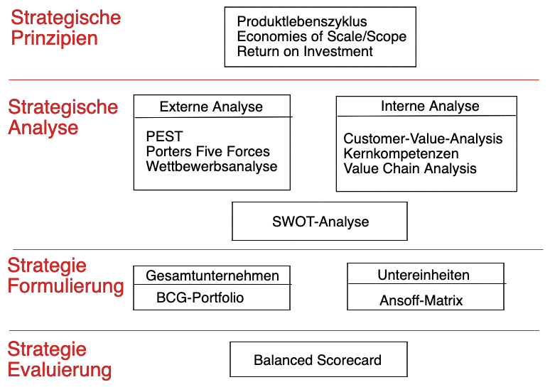
Entwicklung von Strategien#
\(Vision \implies Leitbild \implies Ziele \implies \textbf{Strategie}\)
Vision: langfristige Idee für Unternehmen
sinnstiftend
handlungsleitend
integrierend
Leitbild: Umsetzung der Vision
Bündelung der Motivation
Darstellung nach innen und außen
Ziele: gleichwertig aus
ökonomisch
ökologisch
sozial
Geschäftsmodell#
Geschäftsmodell : Grundprinzip des Unternehmens in der Wertschöpfung
Elemente:
Produkt-Markt Modell: was produzieren?
Wertschöpfungsmodell: wie produzieren?
Verkaufsmodell: wie verkaufen?
wirtschaftliche Logik: „wie gewinne machen?
Arten:
Bait-and-Hook
Freemium
Lock-In
…
Analyse mit Business-Model-Canvas:
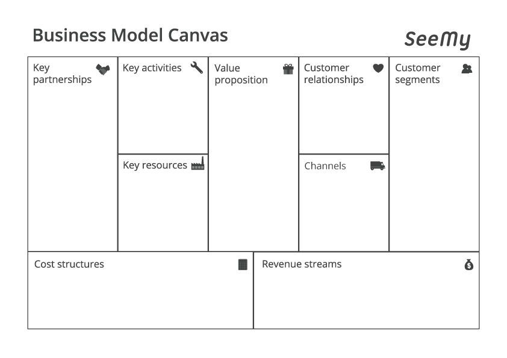
Strategische Prinzipien#
Leitfrage: "Was wollen wir als Unternehmen produzieren?"
Produktlebenszyklus#
Analyse eines Produktes anhand von 5 Phasen: 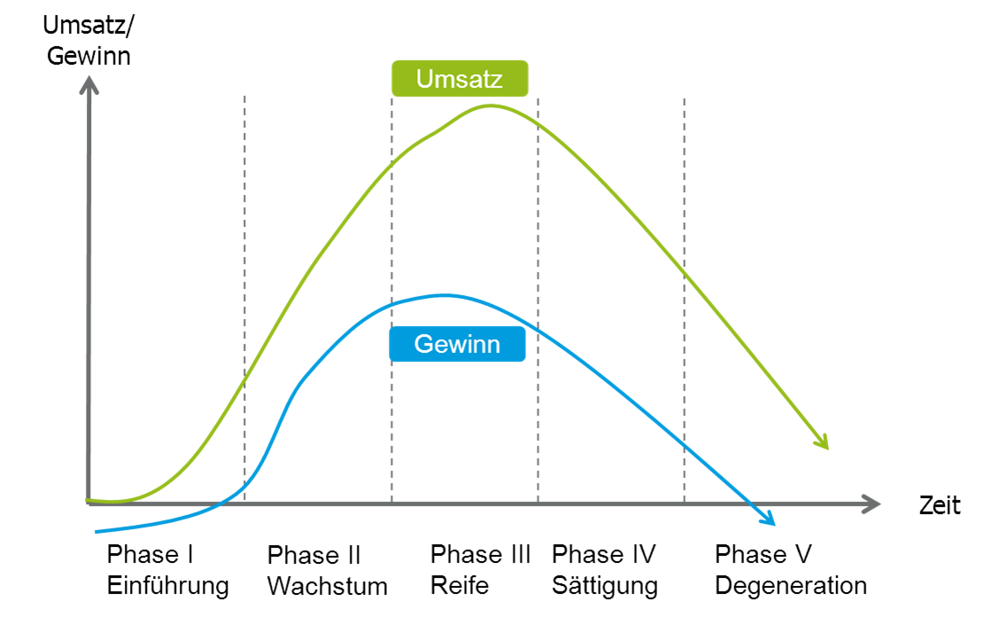
Economies of Scale / Scope#
Economies of Scale |
Economies of Scope |
|
|---|---|---|
Übersetzung |
Skaleneffekte |
Verbundeffekte |
Beschreibung |
Kostenvorteile durch hohe Stückzahlen |
Kostenvorteile durch breite Produktpalette |
Gründe: |
Verteilung der Fixkosten |
Verhandlungsmacht / Finanzstärke |
Großmengenrabatte |
gemeinsame Nutzung einer Ressource |
ROI#
Return on Investment: Kennzahl für unternehmerischen Erfolg, auch Kapitalrendite
Berechnung: \(ROI = \frac{Gewinn}{eingesetztes \ Kapital}\)
Strategische Umweltanalyse#
Leitfrage: "Was will der Markt?"
phasenbasierter Ansatz zur Unternehmensanalyse
PEST#
Analyse in 4 Dimensionen, meist bezogen auf eine Region, ein Landes.
Für jede Dimension anhand der Indikatoren erlaubt Bewertung der allgemeinen Situation des Landes, nicht nur nach finanziellen Gesichtspunkten
Politik |
Wirtschaft |
Sozial |
Technologisch |
|---|---|---|---|
Gesetzgebung |
Arbeitslosigkeit |
Werte |
Aktuelles Niveau |
Steuern |
Konjunktur |
Demographie |
F&E Ausgaben |
Regulierung |
Schlüsselindustrien |
Konsumentenverhalten |
Patente |
Stabilität |
Infrastruktur |
Mobilität |
Innovationen |
Porters Five Forces#
Analyse der Stärke des Wettbewerbs und der Machtverteilung in einer Branche
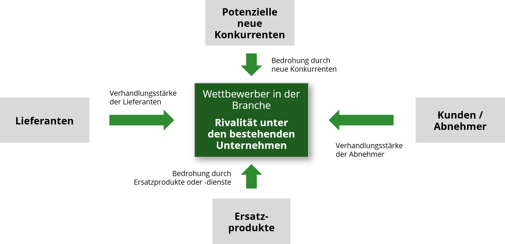
neue Konkurrenten |
Ersatzprodukte |
Kundenmacht |
Lieferantenmacht |
|---|---|---|---|
Skaleneffekte |
Wechselkosten |
Konzentration |
Konzentration |
Spezialwissen |
Gleichheit der Produkte |
Preisempfindlichkeit |
Wechselkosten |
Eintrittsbarrieren |
Substitutionsneigung |
Informationsstand |
Gleichheit der Produkte |
Risiko Rückwärtsintegration |
Risiko Vorwärtsintegration |
=> Stärke des Wettbewerbs
Anzahl Wettbewerber
Kundenloyalität
Branchenwachstum
Vorwärts / Rückwärtsintegration: Übernahme von vorhergehenden / nachgeordneten Schritten in der Verwertungskette
Strategische Unternehmensanalyse#
Leifrage: "Wie ist unser Unternehmen aufgestellt?"
Customer Value Analysis (CVA)#
Kundennutzenanalyse: Analyse der Verlangen der Kunden im Vergleich von eigenen Produkten zu Konkurrenzprodukten
Bestandteil |
Vorgehen |
|---|---|
1: Marktsegmentierung |
wer sind Kunden / Konkurrenten? |
2: Kundenerwartungen |
was sind kaufentscheidende Merkmale? |
3: Merkmalswichtigkeit |
wie gewichten Kunden die Merkmale? |
4: Erfolgsbewertung |
wie viele Punkt eerhält jede Mermalskategorie? |
Vorlage: 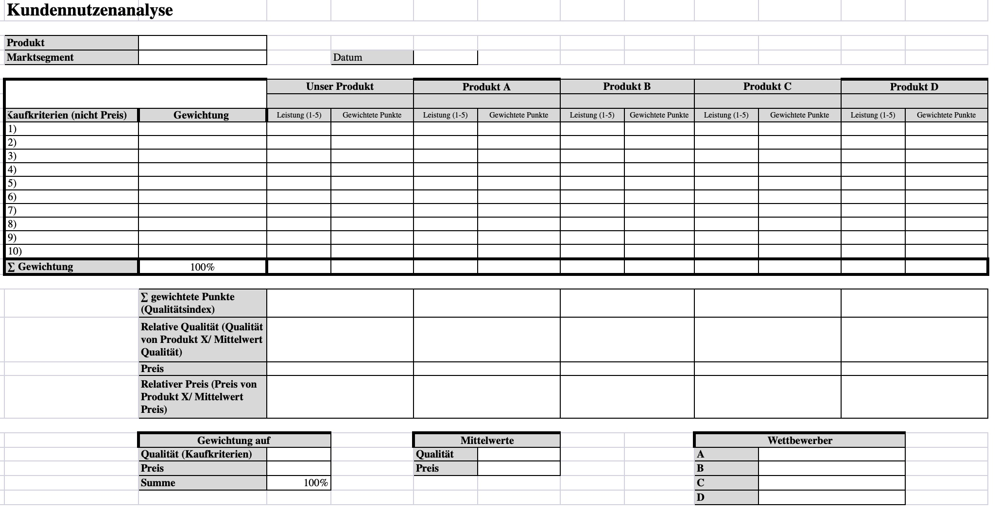 anhand des relativen Preises und der relativen Qualität lässt sich dann eine Customer Value Map erstellen
Customer Value Map#
anhand des relativen Preises und der relativen Qualität aus CVA lässt sich dann eine Customer Value Map erstellen
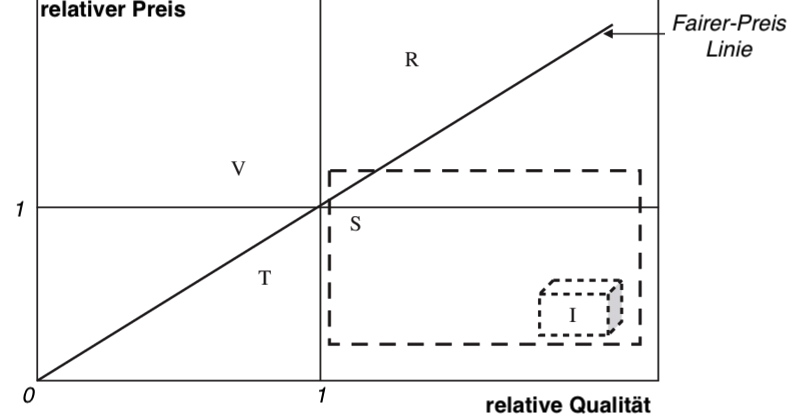
Value Chain Analysis#
Value Chain Analyse Analyse des Nutzens, die ein Unternehmen in seiner Wertschöpfungskette betreibt
muss immer auf jeweiliges Unternehmen individuell angepasst werden!
Bestandteile:
Primäre Aktivitäten |
Sekundäre Aktivitäten |
|---|---|
interne Logistik |
Unternehmensinfrastruktur |
Produktion |
Personalwesen |
externe Logistik |
Technologieentwicklung |
Marketing / Verkauf |
Beschaffungswesen |
Service |
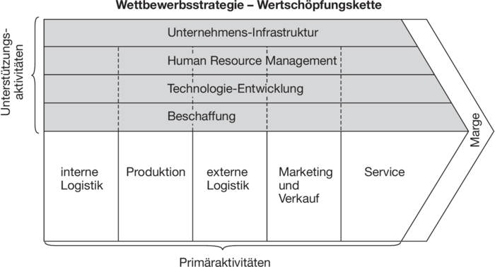
Kompetenzanalyse#
dient zum Herausfinden der Kernkomeptenz
Kernkompetenz: eine Technologien / Prozesse / Know-How, die:
einzigartig für Kunden
einmalig ggü. Konkurrenz und
schwer imitierbar sind
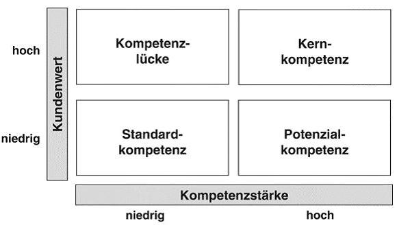
SWOT#
aus den gesammelten Ergebnissen der internen und externen Analyse => SWOT-Analyse
aus Unternehmensanalyse: Strengths + Weaknesses (Stärken | Schwächen)
aus Umweltanalyse: Opportunities + Threats (Chancen | Risiken)
Darstellung in Tableau zur Ableitung von Strategien und Komeptenzen, die entwickelt werden müssen

Strategieformulierung#
Leitfrage: "Wo wollen wir als Unternehmen hin?"
Ebenen der Strategieformulierung:
Ebene |
Leitfrage |
Methode |
|---|---|---|
Gesamtunernehmen |
in welche Märtke wollen wir? |
BCG-Portfolio |
Geschäftseinheiten |
wie erhalten wir Wettbewerbsvorteile |
Ansoff-Matrix |
BCG-Portfoliomethode#
beschreibt Strategien, die in verschiedenen Produktlebensphasen angewandt werden sollten
Einführungsphase
Wachstum hoch + Marktanteil gering
=> Offensivstrategie: hohe Investitionen = niedrige Rendite
Wachstumsphase
Wachstum hoch, steigende Gewinne
=> Investtionsstrategie: Marktanteile ausbauen!
Reifephase
hohe Gewinne einstreichen, Refinanzierung der Investitionen
=> Defensivstrategie: Verteidung der Marktanteile gegen Konkurrenten
Sättigungsphase:
sinkendes Wachstum / Gewinne
=> Desinvestitionsstrategie: Ausstieg vorbereiten, Geld rausziehen
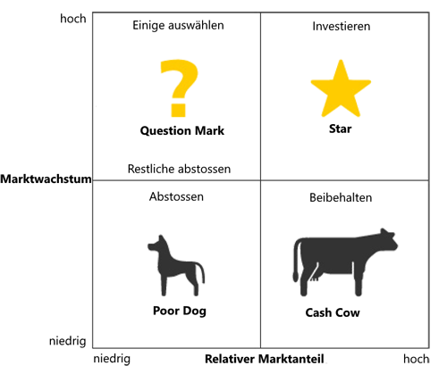
generische Strategien nach Porter#
Strategie |
Beschreibung |
Beispiel |
|---|---|---|
Kostenführerschaft |
durch niedrige Preise + hohes Volumen |
VW |
Differenzierung |
durch besondere Produkte + hohe Margen |
Mercedes |
Nischenbesetzung |
Teilmarkt mit besonderem zufriedenstellen |
Porsche |
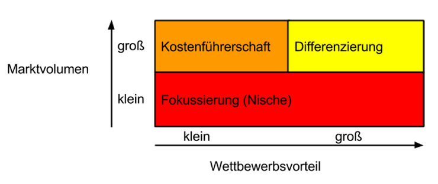
Ansoff Matrix#
Ansoff-Matrix: bexchreibt Wachstumstrategien in bestehendem + neuen Markt

Arten der Diversifikation:
horizontal: Erweiterung der Produktpalette durch Nutzung Synergieffekte
Vertikal: Integration vor / nachgelagerter Tätigkeiten
lateral: in komplett neuen Bereich, risikoreich
Strategiebewertung mit Balanced Scorecard#
Balanced-Scorecard: Methode zur Bewertung / Kontrolle von Unternehmensstrategien in 4 Bereichen, sowohl monetär als auch nicht-monetär
Bereiche:
Kunden
Finanzen
interne Prozesse
Lernen / Entwicklung
Schritte in jedem Bereich:
Ursache Wirkung analysieren => Ziele definieren
Messgrößen für Ziele => Kennzahlen festlegen
Vorgaben zur Erreichung => Zielwerte bestimmen
Handlungsanweisungen ableiten => Maßnahmen
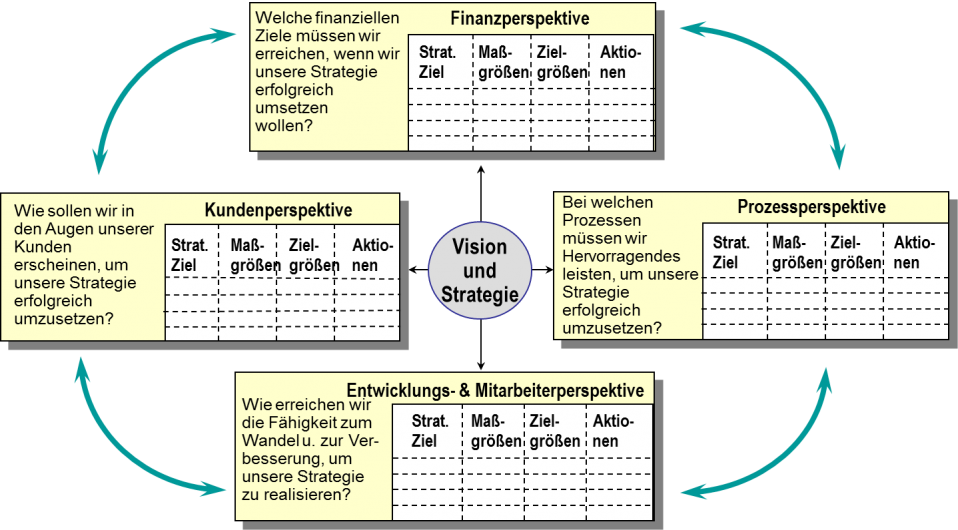 nach gewissen Zeitraum bewerten, ob Zielgrößen erreicht wurden und wenn nicht: anpassen
Betriebliche Prozesse#
Leistungsprozesse#
Leistungsprozesse: Prozesse in einem Unternehmen zur Produkt/Leistungserstellung und Verwertung
Phasen: \(Beschaffung \implies Produktion \implies Absatz\)
meistens Beschaffung \(\neq\) Absatz => Bestandsbildung
Ziel des Managements: optimales Güterwirtschaftliches Gleichgewicht
also Austarieren und Planung in jeder Phase
Güterwirtschaftliches Gleichgewicht: Beschaffung enstpricht Anforderungen des Betriebs mit möglichst wenig Bestandsbildung und Lagerung
Bereitstellungsplanung:
Bereitstellung von Ressourcen, Personal, Werkstoffen
Planung von Bedarf, Beschaffung, Einsatz
Zielkonflikt: Lagerung vs Kosten
„lieber zuviel kaufen oder sparen?“
= Optimierung der Mengen
Produktionsplanung:
Kurzfristig: Planung bei gegebener Betriebskapazität
wie verteilen der Mitarbeiter auf gegebene Maschinen?
Langfristig: Kapazität variabel
brauchen wir neue Mitarbeiter / Maschinen ?
Absatzplanung:
Bestimmt vorherige Stufen
Anpassung an Markt mit Marketing
Bestandteile:
Produktpolitik: welches Produkt stellen wir her?
Preispolitik: wie viel soll es kosten?
Kommunikation: wie bekommt der Kunde was mit?
Distribution: wie kommt es zum Kunden?
Finanzprozesse#
Spiegelung der Leistungsprozesse aus finanzieller Sichtweise
Kategorien von Finanzströmen:
Kapitalbindend (Ausgaben)
kapitalfreisetzend (Einnahmen)
kapitalzuführend (Gewinne, Zinsen)
kapitalentziehend (Verluste, Zinszahlungen)
Finanzplanung#
Darstellung der finanziellen Ziele eines Unternehmens und kommende Investitionen
Invesitionen: Maßnahmen zum Erhalt / Erhöhung der Betriebskapazität
benötigt immer Finanzierung
Finanzierung: Bereitstellung von Kapital, aber nicht nur für Investitionen
mögliche Kapitalquellen: Eigenkapital / Fremdkapital